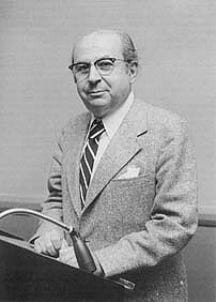
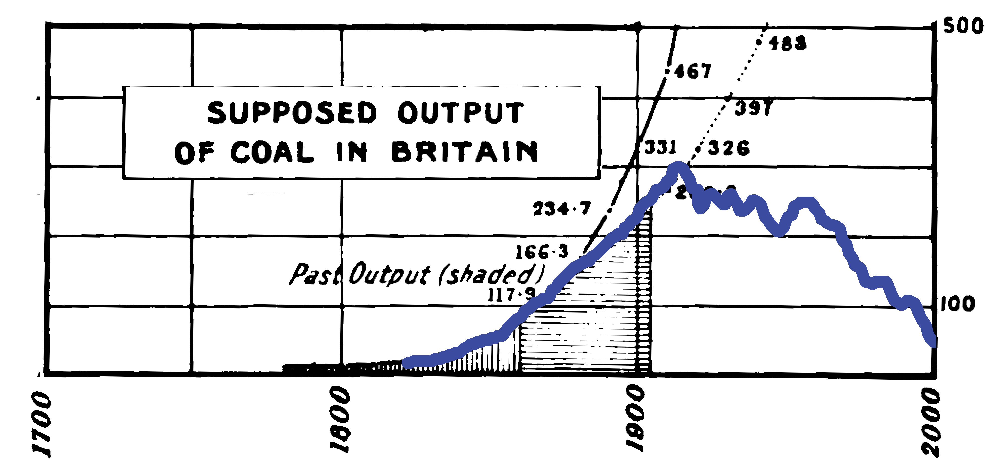

I’m Jonathan Burbaum, and this is Healing Earth with Technology: a weekly, Science-based, subscriber-supported serial. In previous installments of this serial, I have offered a peek behind the headlines of science, focusing on climate change/global warming/decarbonization. I have welcomed comments, contributions, and discussions, particularly those that follow Deming’s caveat, “In God we trust. All others, bring data.” Recently, I’ve pivoted to a more direct approach.
COP26 is behind us, and, like its 25 predecessor “Conferences of Parties”, it’s produced a series of toothless political commitments that are loosely based on recommendations given by large teams of scientists. Sadly, such approaches, while intellectually honest, are seriously limited in scope, and thus doomed to failure in the long run. Given the continued naive commitments of our leaders, I must now propose a more aggressive pitch:
One planet. One solution. Now.
That’s intentionally provocative, but not prescriptive. No treatment has all the answers. But we must prepare to act with clear-headed decisions—any partial solution should be required to bring the rest of the solution to the table as well, and to specify what the tradeoffs are. We won’t get too many chances to get it right.
You can read Healing for free, and you can reach me directly by replying to this email. If someone forwarded you this email, they’re asking you to sign up. You can do that by clicking here.
If you really want to help spread the word, then pay for the otherwise free subscription. I use any money I collect to increase readership through Facebook and LinkedIn ads.
Today’s read: 9 minutes.
As I’ve continued to write, I’ve found myself increasingly frustrated by the depiction of climate change in the media. As a species, we’re facing a daunting challenge to our domination of Earth, yet this existential threat is being mischaracterized for apparently self-serving reasons. At one extreme, some believe that the past will continue unencumbered into the future, and, at the other, some believe that we should forgo our domination in favor of a return to Nature. Following contemporary polarization trends, these two camps have sniped at one another with simplistic messages and have raised money from the fears they provoke and what they’re against. Of course, no one should be against humanity, and I have no other agenda here.
First, it’s a good idea to listen to those who are smarter than yourself. Thus:

Economist Nicholas Georgescu-Roegen
“If we stampede over details, we can say that every baby born now means one human life less in the future. But also every Cadillac produced at any time means fewer lives in the future. Up to this day, the price of technological progress has meant a shift from the more abundant source of low entropy — the solar radiation — to the less abundant one — the earth’s mineral resources. True, without this progress some of these resources would not have come to have any economic value. But this point does not make the balance outlined here less pertinent. Population pressure and technological progress bring ceteris paribus the career of the human species nearer to its end only because both factors cause a speedier decumulation of its dowry. The sun will continue to shine on the earth, perhaps, almost as bright as today even after the extinction of mankind and will feed with low entropy other species, those with no ambition whatsoever. For we must not doubt that, man’s nature being what it is, the destiny of the human species is to choose a truly great but brief, not a long and dull, career. “Civilization is the economy of power [low entropy],” as Justus von Liebig said long ago, but the word economy must be understood as applying rather to the problems of the moment, not to the entire life span of mankind. Confronted, in the distant future, with the impending exhaustion of mineral resources (which caused Jevons to become alarmed about the coal reserves), mankind — one might try to reassure us — will retrace its steps. The thought ignores that, evolution being irrevocable, steps cannot be retraced in history.”
The Entropy Law and the Economic Process by Nicholas Georgescu-Roegen. Chapter X. Entropy, Value, and Development, part 4, From the Struggle for Entropy to Social Conflict, 1971.
The above quote (and, indeed, the entire book) draws striking parallels between thermodynamics and economics. It draws its inspiration from the Second Law of Thermodynamics (what the author calls the Entropy Law). In a broad sense, This Law distinguishes energy (like cash reserves on the balance sheet) from power (like cash flows on the income statement). The parallel is compelling—it’s obvious that without power, energy depletion is inevitable. Notably, Georgescu-Roegen also points out (by proxy, pointing to the great 19th-century chemist Justus von Liebig) that the economy itself flows from power, most significantly the combustion of geologic carbon. The effects of this activity (climate change, resource depletion, etc.) do not threaten the planet per se. Instead, economic progress affects modern humanity by reducing the time we have left to control planetary resources. The connection between energy and the economy is an important distinction that contemporary influencers ought to heed.
By now, it should be apparent to my regular readers that solutions to the climate change problem are neither purely technological nor purely political. Neither breakthrough innovations nor concerted political willpower will solve the problem (at least not in whatever time we have left). Climate change is primarily, perhaps exclusively, a problem in economics, with all that such a characterization entails. The primary consequence of climate change, by extrapolation, will be an impact on human civilization through economic deprivation. By continuing to pin our hopes on technology or politics, we’re ignoring an existential threat to our economic standard of living.
Let’s turn to the observation, referred to obliquely above, known as Jevons’ Paradox. Recall that a “paradox” is a mental illusion that, although true, seems to contradict “common sense” or “public consensus”. To avoid such an illusion requires sufficient understanding to recognize it.
W. Stanley Jevons, for whom the paradox is named, was a 19th-century academic economist based in Britain. He was a prototype of M. King Hubbert, the 20th-century prophet of “Peak Oil”, and as such, Jevons was one of the first to warn that natural energy resources are inherently finite. His main concern was the depletion of the British coalfields, which, he cautioned, would inevitably lead to diminished industrial capability, and by extrapolation, to a loss of the global power of the British Empire. His eponymous Paradox first appeared in his 1865 book, “The Coal Question”1. Like many of his contemporaries, he expanded on an idea from a predecessor, C. W. Williams, whom he quoted:
“The economy of fuel is the secret of the economy of the steam-engine; it is the fountain of its power, and the adopted measure of its effects. Whatever, therefore, conduces to increase the efficiency of coal, and to diminish the cost of its use, directly tends to augment the value of the steam-engine, and to enlarge the field of its operations.”2
The “paradox” targeted a “common sense” view that more efficient use of coal would reduce its depletion rate, allowing the British to maintain power for a longer duration. It is stated concisely (in Jevons’ own words):
It is wholly a confusion of ideas to suppose that the economical use of fuel is equivalent to a diminished consumption. The very contrary is the truth.
So, a paradox is a confusion of ideas. The illusion, held by many in the modern renewables space, is that efficiency improvements will inevitably lead to lower emissions. On the flip side, Jevons suggests that efficiency improvements increase demand, and by extension, have no impact on the trajectory of our emissions. This is consistent with what I’ve described previously about the past few decades of non-progress on climate change.
It is interesting to read “The Coal Question” in a modern context, where coal plays the villain. Jevons goes into detail to support his paradoxical assertion, mainly focusing on the increase in coal consumption as correlated to the increased efficiency of steam engines. He details the progress of steam engines, including inventors James Watt and Watt’s technology forefathers, Savery, Newcomen, and Smeaton, and a successor (Stirling). These primordial engineers invented types of steam engines that captured coal’s energy with ever-higher efficiency. However, it wasn’t until Watt’s engine, with its improved efficiency, that coal use became economical, and coal’s utility skyrocketed.
Jevons waxed poetic about the virtues of coal. He wrote, “With coal, almost any feat is possible or easy; without it, we are thrown back into the laborious poverty of early times.” The correlation between energy and civilization was clear to him, as well. He also wrote an entire chapter, “On Supposed Substitutes for Coal,” which foreshadowed today’s dilemma, writing:
“Electricity…is to the present age what the perpetual motion was to an age not far removed. People…take that one step too much which the contrivers of the perpetual motion took—they treat electricity not only as a marvellous mode of distributing power, they treat it as a source of self-creating power.”
Equating electric power with energy is a frequent error.3 Electricity is, as Jevons notes, simply a means of distribution—it cannot easily be stored or transmitted over long distances. He similarly points to modern issues with wind and hydropower. So, ask yourself, are we making the same mistakes by cloudy thinking?
Well, let’s examine whether Jevons’ Paradox applies more broadly to energy issues. One area where efficiency gains have been well quantified is in the area of personal transportation. The legislation of Corporate Average Fuel Efficiency standards have made our automobiles significantly more efficient. If we were already driving as much as we wanted to, increased fuel efficiency should not affect the per capita vehicle miles traveled (because drivers receive the same utility at lower cost), thus saving fuel (and emissions). In contrast, Jevons’ Paradox holds there, too, then more efficient cars will lead to more travel. What does the data say?
These data sets are independent, but there is a clear correlation. The average American (as if there is one!) uses about 450 gallons of gasoline per year for transportation, regardless of how much it costs or how efficient the vehicle fleet is. So, Jevons appears to be broadly applicable.
However, as a futurist in 1865, Jevons failed to heed the investment adviser’s caveat: Past performance is not an indicator of future returns. His treatise was arguably British gospel until well after its third edition, revised after his death. This final edition showed his predictions to be reasonably accurate, at least through the final edition in 1906:

The background chart describes Jevons’ predictions from his original publication (1865) updated for the Third Edition (1906). The vertical axis is tonnes of coal. The vertical shading is data until 1865. The horizontal shading is its update. The blue overlay is actual data through 2000, from Figure 2.2 of Hook, M. 2010. Coal and Oil: The Dark Monarchs of Global Energy. Understanding Supply and Extraction Patterns and their Importance for Future Production.
Of course, coal deviated significantly from Jevons’ projections only after around 1915: Oil (and electricity) became the new energy motif, just as World War I began the dissolution of the British Empire. It’s hard for anyone to forecast the future!
Translating Jevons’ Paradox into more broadly familiar economic terms, he implores us not to confuse lower costs (higher efficiency) with lower expenses (lower consumption). Instead, the standard economic “Law of Supply and Demand” takes over: So long as there is demand, lower commodities prices will increase purchases instead of encouraging savings. When considering energy and money as interchangeable concepts, perhaps the paradox seems less paradoxical.
Can we extrapolate these parallel concepts to the current global sprint toward decarbonization? This trajectory aligns the global adoption of clean(er) alternative energy sources with reduced emissions. Still, does it stand to reason, or does it run into a paradox akin to Jevons? In isolation, the conceptual equivalent appears sensible. It’s simply choosing to substitute one source of power (low entropy, income, etc.) for another as if we could simply choose a source that resonates with our ideals. But, that’s not the proper perspective. If you quit your job, the income no longer flows to you, but so long as the job needs to be done, the cash flows elsewhere to another worker. You feel better about your choice, but the world remains unchanged. By analogy, if we completely decarbonize the US power supply, resources will flow elsewhere, with no global change in net emissions.
There is also a meta warning in reading Jevons today. During the 40-odd years between the first and third editions, many critics appeared in British society, questioning his predictions on quantitative terms. Nevertheless, he continued to be qualitatively correct, until he wasn’t. Then, the combination of an unanticipated additional source of energy (oil) and an epic political conflict (WWI) appeared, which led to a permanent discontinuity in British coal production. Considering the predictions of climate modelers in the IPCC clique, they also predict an exponential rise in emissions to unsustainable levels. Might there be a breaking point soon?
This is the quotation that Jevons cites. However, it does not appear in the cited Williams work, found here: https://wellcomecollection.org/works/jt8am7j7/items. Instead, it comes from an earlier work: https://wellcomecollection.org/works/urpuxmhd. In this manuscript, Williams attributes the quote to a predecessor, Josiah Parkes, in an 1838 publication entitled “The Evaporation of Water from Steam-boilers.”
When our representatives don’t know the difference between a grant and a loan or between energy and power, it is a problem. For example, consider the following exchange in 2012 between Dr. Arun Majumdar (then head of ARPA-E) and Rep. Dana Rohrabacher (R-CA) as part of a Congressional Committee hearing:
Mr. Rohrabacher. Okay. That [the White house did not attempt to influence funding by ARPA-E] is good to hear. Obviously--
well, I can't say obviously was the case with Solyndra. We will
find out. There is a case, for example, where Beacon Power
received a $2.8 grant from you, and they also received a $24
million grant from the Office of Electricity from DOE and a $43
million loan guarantee from the DOE, all within a seven-month
period. Now, how is it that your organization that is supposed
to be aimed at helping people who can't get funding is now
helping an organization duplicating the support from two
different other entities or two other approaches they are doing
for money? How is that?
Dr. Majumdar. Sure. I will be happy to clarify that,
Congressman. What they did in the ARPA-E project is they went
through a competitive process. They actually went through that
process and won this grant, which is not a loan, it is a grant,
and this is on energy storage as opposed to power storage. So
the one that they got from the Office of Electricity is for
power storage which is for frequency regulation. It is short-
time power storage with fly wheels.
Mr. Rohrabacher. Now, I know----
Dr. Majumdar. Our program was designed to look for storing
gigawatts of power for an hour. When a wind gust comes in from
the west or from anywhere else, you got to store about a
gigawatt of electricity for an hour. That is energy. That is
not power. And ARPA-E's program was designed to look at the
energy storage which is quite different from the power storage.
And I can go into----
Mr. Rohrabacher. I will have to admit to you that not being
an expert when a Ph.D. tells me that there is a difference
between energy and power, and those of us who are less
educated----
Dr. Majumdar. Let me explain.
Mr. Rohrabacher. It seems rather similar to be--no, it is
government money. And by the way, this company happened to go
bankrupt after receiving this $70 million of money from the
Government.
Dr. Majumdar. The difference between power and energy is
like if you have a car, the power comes from your engine, and
the energy storage comes from your gas tank, the size of a gas
tank. They are different, and so that is what--so what we were
funding them for is the energy storage part.